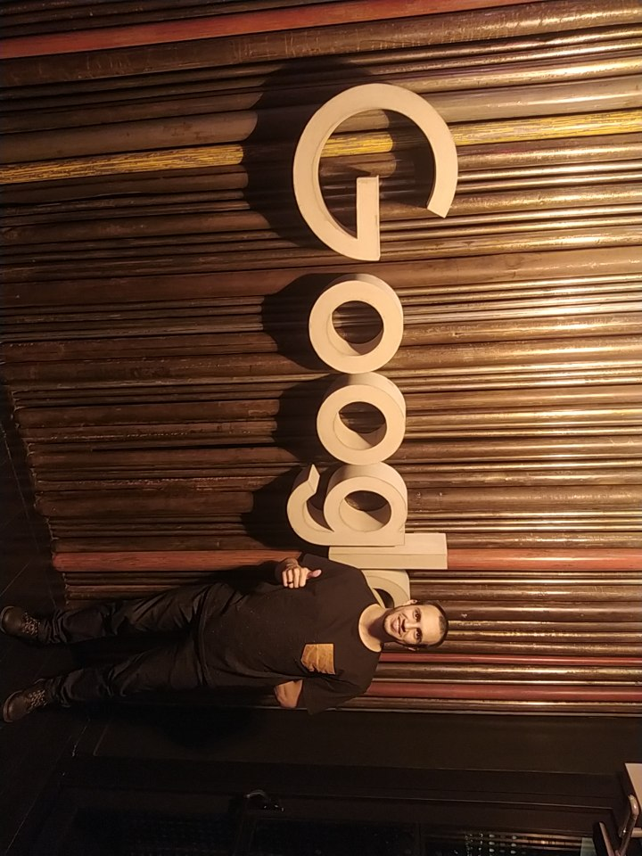
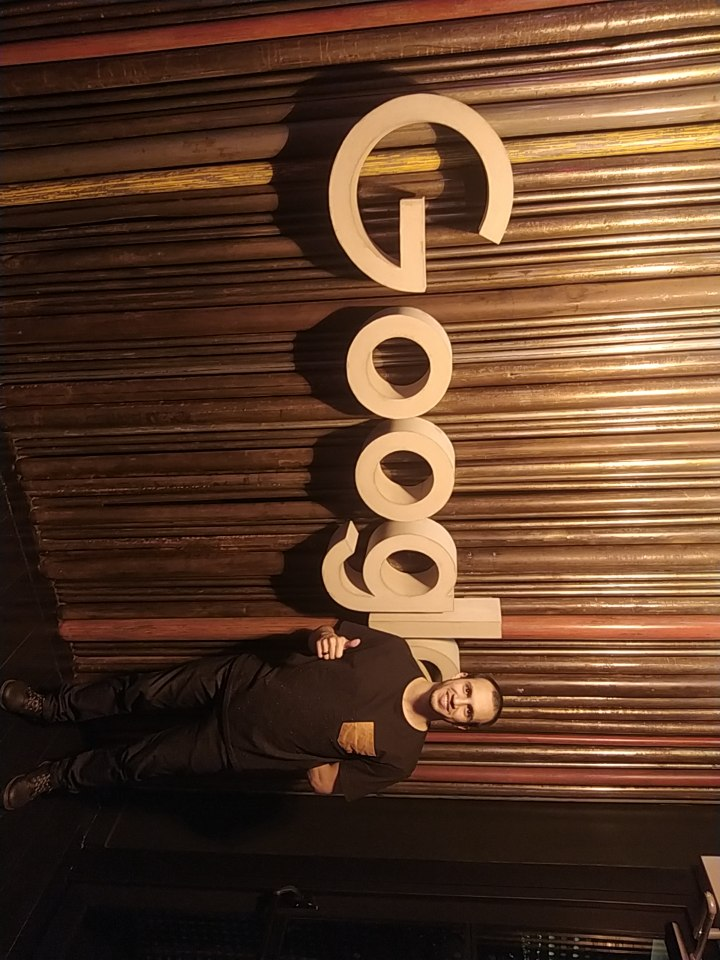

Looker Studio Dashboard
A dashboard created using Looker Studio to analyze data from Sales and Marketing.
View Project
Data Analyst and Statistician proficient in SQL, Power BI, Looker Studio, Python, and R.
View My WorkHolding a degree in Systems Analysis and Development (2017), my career as a Data Analyst led me to specialize in Applied Computational Statistics.
I have built a career of over five years in data analysis within the digital marketing industry, developing and implementing data-driven solutions for high-profile clients, including Google. I am experienced in process optimization through automation, structuring robust databases, and translating complex data into actionable insights through statistical analysis and interactive dashboards.
My expertise covers data extraction and manipulation with SQL, Python, and R; creating interactive dashboards in Power BI and Looker Studio; and applying Machine Learning and Media Mix Modeling (MMM) using Meridian and Robyn. Additionally, I manage workflows via Google Cloud Platform (GCP) and APIs.
I have developed both technical expertise and communication skills in Portuguese and English, enabling me to translate complex data into business strategies and collaborate effectively with multidisciplinary teams to drive business success.
 Portuguese: Native
Portuguese: Native
 English: Advanced
English: Advanced
 

 Power BI
Looker Studio
Power BI
Looker Studio
 Python
Python
 R
R
 SQL
SQL
 Git
Git
 Excel
Excel
 Javascript
Javascript
 Meta Robyn
Meta Robyn
 BigQuery (GCP)
BigQuery (GCP)
 Shiny for Python
Shiny for Python
 n8n
Meta Robyn
n8n
Meta Robyn
A dashboard created using Looker Studio to analyze data from Sales and Marketing.
View Project
A dashboard created using Shiny and Python to analyze data from Sales and Marketing.
View Project
A dashboard created using Power BI to analyze data from Sales and Marketing.
View Project
Thesis: Research on Vulnerability Attack Types using Kali Linux

Thesis: Classification and Analysis of Encyclopedia of Conscientiology Entries using Natural Language Processing and Machine Learning Methods.


Meta